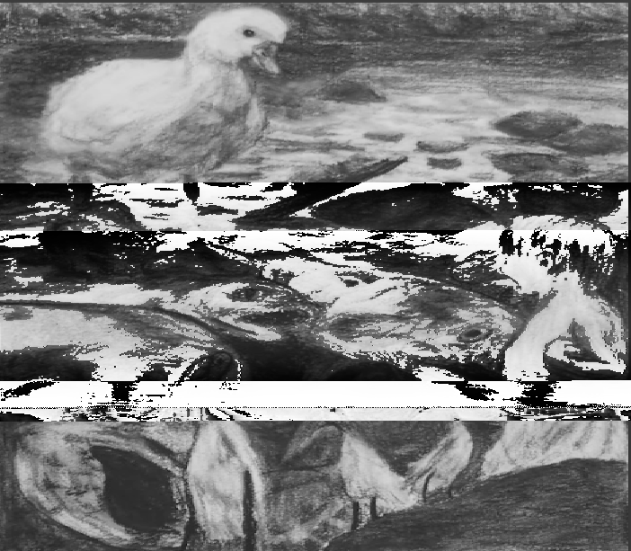

Washed by Nostalgia.
Turning my old artwork into a raw photoshop file I was able to put it through Audacity to distort the art and in turn the meaning of it.
To my memory I had added 2 fade ins and a fade out to show a fast forward to the present through an ending of 2 periods in my life.
Past high school when I had created the source material, past college to the point which I take this class,
to the current era where I am close to graduating we continue the story behind the art.
What we encounter is a branched evolution of my thought process.
I took multiple screenshots of videos, livestreams, and shorts of the Youtube Channel "Team Scrub."
I layered them over each other at low opacity and on top I put a screenshot of Metal Gear Solid 4's end cutscene where Solid Snake and Liquid Ocelot fight each other on top.
I took Kojima's face mashed with Absolute Cinema meme, and the man pointing meme and friends cheering meme to represent the one person who is watching multiple people.
To further demonstrate the context of the the meme, gave it the visual aesthetics of a Youtube Thumbnail, with the correct ratio, the watch time bar, and the video length.
Temporary to be replaced
I have played card games such as and especially Yugioh since I have been a child and I've grown up along side how fast the game has grown.
I found the videos I've used in this mashup through happening to cross them as I've been getting back into the game from a few years ago.
I always hear about how hard it is to get into this game I love because of how complicated it is to play and maintain as a hobby.
I don't really seek to convince anyone with this video to play Yugioh,
but I do wish to comment and reflect the sentiments of both fans and nonfans have to say about my favorite game.
I must admit that this video requires a bit of knowledge about card games in general and to recall some nostalgia about Yugioh to understand the ending.
Pretend to Play a little game with me.
I've always been enraptured by games and stories that have multiple endings as determined by the audience.
I hoped to give at least a few couple of endings for replay ability. I was inspired by such media as the "Henry Stickman Games"
or choose your own adventure books, where you encounter various ways to win and lose the game.
Back to the Index\
See More?